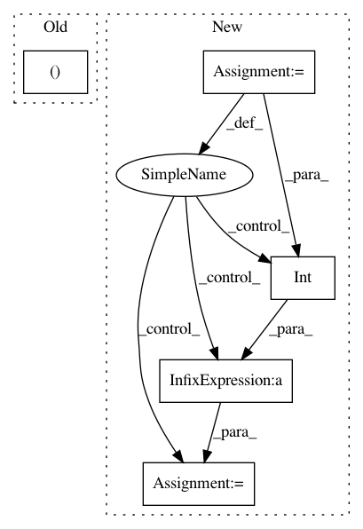

023331ec2a7b0086abfc81eca16c84a1692ee653,keras/layers/convolutional.py,Convolution2D,build,#Convolution2D#Any#,420
Before Change
def build(self, input_shape):
if self.data_format == "channels_first":
stack_size = input_shape[1]
self.W_shape = (self.nb_filter, stack_size, self.nb_row, self.nb_col)
elif self.data_format == "channels_last":
stack_size = input_shape[3]
self.W_shape = (self.nb_row, self.nb_col, stack_size, self.nb_filter)
else:
After Change
if self.data_format == "channels_first":
channel_axis = 1
else:
channel_axis = 3
if input_shape[channel_axis] is None:
raise ValueError("The channel dimension of the inputs to "
"`SeparableConv2D` "
"should be defined. Found `None`.")
input_dim = int(input_shape[channel_axis])
depthwise_kernel_shape = (self.kernel_size[0],
self.kernel_size[1],
input_dim,
self.depth_multiplier)
pointwise_kernel_shape = (1, 1,
self.depth_multiplier * input_dim,
self.filters)
self.depthwise_kernel = self.add_weight(
depthwise_kernel_shape,
initializer=self.depthwise_initializer,
In pattern: SUPERPATTERN
Frequency: 3
Non-data size: 5
Instances
Project Name: keras-team/keras
Commit Name: 023331ec2a7b0086abfc81eca16c84a1692ee653
Time: 2017-02-09
Author: francois.chollet@gmail.com
File Name: keras/layers/convolutional.py
Class Name: Convolution2D
Method Name: build
Project Name: NifTK/NiftyNet
Commit Name: f9f1242e23bc4ad0433577b81274b9a6065fbb89
Time: 2017-07-13
Author: eli.gibson@gmail.com
File Name: niftynet/utilities/misc_io.py
Class Name:
Method Name: match_volume_shape_to_patch_definition
Project Name: keras-team/autokeras
Commit Name: 21994919156aac15558f77555538346fb702bcbc
Time: 2018-11-26
Author: jhfjhfj1@gmail.com
File Name: autokeras/nn/layers.py
Class Name: StubConv
Method Name: output_shape